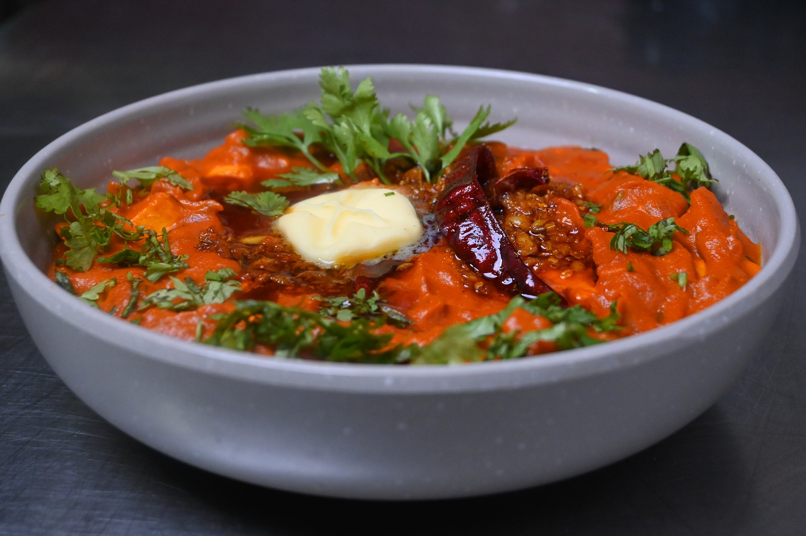

PaNeeR

Ingredients:
- 2 cups full-fat milk
- 2 tbsp lemon juice or vinegar
- A pinch of salt
Instructions:
- Boil the milk: Bring the milk to a boil in a pan. Once it starts boiling, reduce the heat.
- Curdle the milk: Add lemon juice or vinegar and stir gently. The milk will curdle, and the whey will separate. Turn off the heat.
- Strain the curds: Pour the mixture through a cheesecloth or muslin cloth to strain the curds from the whey. Press gently to remove excess water.
- Shape the paneer: Tie the cloth and press the paneer under a heavy object for 30 minutes to form a firm block.
- Cut and serve: Once set, cut into cubes. Paneer is now ready for use in curries or grilling.